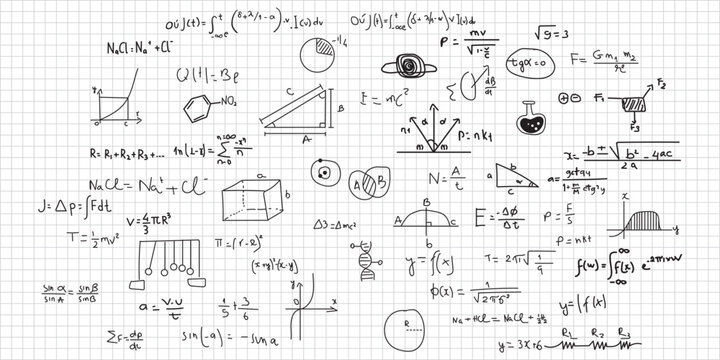

Se skolverket för mer information

Kärnan i ämnet svenska är språk och litteratur. Språket är människans främsta redskap för reflektion, kommunikation och kunskapsutveckling. Genom språket kan människan uttrycka sin personlighet, och med hjälp av skönlitteratur, texter av olika slag och olika typer av medier lär hon känna sin omvärld, sina medmänniskor och sig själv.
Matematiken har en flertusenårig historia med bidrag från många kulturer. Den utvecklas såväl ur praktiska behov som ur människans nyfikenhet och lust att utforska matematiken som sådan. Kommunikation med hjälp av matematikens språk är likartad över hela världen. I takt med att samhället digitaliseras används matematiken i alltmer komplexa situationer. Matematik är även ett verktyg inom vetenskaper och yrkesliv samt har en avgörande roll inom naturvetenskap.
Det engelska språket omger oss i vardagen och används inom skilda områden som kultur, politik, utbildning och ekonomi. Kunskaper i engelska ökar individens möjligheter att ingå i olika sociala och kulturella sammanhang och att delta i ett globaliserat studie- och arbetsliv. Kunskaper i engelska kan dessutom ge nya perspektiv på omvärlden, ökade möjligheter till kontakter och större förståelse för olika sätt att leva.
Fysik är ett naturvetenskapligt ämne som har sitt ursprung i människans behov av att förstå och förklara sin omvärld. Fysik behandlar allt från växelverkan mellan materiens minsta beståndsdelar till universums ursprung och struktur. Utifrån systematiska observationer och experiment strävar fysiken efter att finna grundläggande principer som kan uttryckas matematiskt i modeller och teorier.
Kemi är ett naturvetenskapligt ämne som har sitt ursprung i människans behov av att förstå och förklara sin omvärld samt i intresset för hur materia är uppbyggd och hur olika livsprocesser fungerar. Kemi behandlar materiens egenskaper, struktur och funktion samt kemiska reaktioner och förändringar.
Historia är ett både humanistiskt och samhällsvetenskapligt ämne som behandlar individens villkor och samhällets förändringar över tid. Människors möjligheter och val inför framtiden är beroende av såväl handlingar och händelser i det förflutna som nutida tolkningar av dessa.
Ämnet samhällskunskap är till sin karaktär tvärvetenskapligt. Det har sin bas inom statsvetenskap, sociologi och nationalekonomi, men även andra samhällsvetenskapliga och humanistiska discipliner ingår. Med hjälp av begrepp, teorier, modeller och metoder från alla dessa discipliner kan komplexa samhällsfrågor förstås och förklaras. Ämnet har även ett historiskt perspektiv.
Ämnet programmering behandlar hur mjukvaror skapas, anpassas och utvecklas samt programmeringens roll i informationstekniska sammanhang som datorsimulering och praktisk datoriserad problemlösning.
Ämnet webbutveckling behandlar de tekniker som används för att presentera och bearbeta information i webbläsaren samt utifrån dessa tekniker skapa och vidareutveckla statiska och dynamiska webbsidor, webbplatser eller webbapplikationer.
Ämnet företagsekonomi behandlar företagande i vid bemärkelse och belyser såväl ekonomiska som sociala och miljömässiga aspekter. I ämnet ingår marknadsföring, ledarskap och organisation, redovisning och kalkylering. Ämnet omfattar även entreprenörskap, som inbegriper metoder och förhållningssätt för att kunna starta, driva och vidareutveckla verksamheter.
Inköp och logistik är viktiga funktioner i många företag. I handeln sker inköp och varuflöden för det mesta i stora volymer och över landgränser. Inom inköp och logistik arbetar man med produkterna i form av lager- och transportarbete eller med att planera och genomföra uppgifter inom inköp, logistik, distribution och spedition.